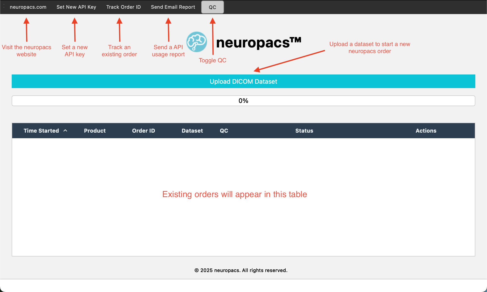

Installation
Follow the instructions below to install neuropacsUI on your operating system.
macOS
-
Download the DMG: Visit our
GitHub Releases
page and download the
neuropacsUI.dmgfile. - Mount the DMG: Double-click the DMG file to mount it. A Finder window will open showing the application.
-
Install the Application: Drag and drop the
neuropacsUI.appicon into your Applications folder. -
Launch the Application: Open the Applications
folder and double-click
neuropacsUI.appto start the application. - Bypass Security Warning*: If you see a warning that the app is not verified, right-click (or control-click) the app, choose "Open," and then confirm to bypass the warning.
Linux
-
Download the Archive: Visit our
GitHub Releases
page and download the
neuropacsUI-linux.tar.gzfile. -
Extract the Archive: Open a terminal and run the
following command (adjust the filename if needed):
tar -xzvf neuropacsUI-linux.tar.gz
-
Run the Application: Change into the extracted
directory and execute the application:
cd neuropacsUI ./neuropacsUI
-
Set Executable Permissions: If required, run:
chmod +x neuropacsUI
Windows
-
Download the ZIP: Visit our
GitHub Releases
page and download the
neuropacsUI-windows.zipfile. - Extract the ZIP: Right-click the ZIP file and choose "Extract All…" to extract it to your preferred folder.
-
Launch the Application: Open the extracted folder
and double-click
neuropacsUI.exeto start the application. - Troubleshooting: If the application does not launch, ensure that your system meets all prerequisites and that your antivirus software is not blocking it.
Usage

Main application
Contact
Kerrick Cavanaugh (Lead Software Engineer) - kerrick@neuropacs.com
License
This project is licensed under the MIT.
Explore
Integrations
Explore the different systems and software that our product integrates with. Click each integration for detailed setup and usage instructions.
Supported Programming Languages
Our product supports various programming languages to offer flexibility in development. Click each language for APIs, libraries, and examples.